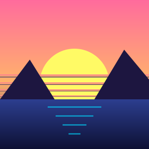

Five web effects, for plain HTML, React, Vue and Svelte.
A theme wave, a CSS glitch kit, an editable reel title, this pixel field and a pull-cord. Each one has a framework-free core and thin wrappers.
Move the pointer. Press and hold, then let go. Click the word.
Dithered pixel background
After the hero of omarchy.org. Reimplemented on a canvas; no brand assets.
Drifting noise, cut by an ordered dither, gets stronger toward the edges. The pointer and a wandering ghost light up the cells near them. Press and hold to stamp a ripple. Click the word, or a button below, for an entrance effect.
Editable slot-machine title
After the "OpenCode Reloaded" title by Kit Langton on anoma.ly.
A glass lens visits each typo and fixes it: a reel rolls, an extra letter shakes and collapses, a swapped pair turns on a belt. Then you can edit it.
- Click or drag a letter to select
- Type to overwrite, Backspace to delete
- Alt + ↑ ↓ cycle a letter
- Alt + ← → rotate the selection
- ⌘/Ctrl + Z undo, with Shift redo
- Double-click empty space to replay
CSS glitch effects
After Matt Deloughry's Building Glitch Effects with Pure CSS.
Scan lines, chromatic aberration, a text glitch, an oscilloscope and corruption blocks. CSS only: add a class.
CRT scan lines

.uifx-crt on a wrapper
CRT image glitch
.uifx-crt-image
Chromatic shadow
.uifx-chroma
Chromatic jitter
.uifx-chroma-jitter
Chromatic layers
.uifx-chroma-layers
Oscilloscope
.uifx-scope and .uifx-glitch-block
Text glitch
SIGNAL LOST.uifx-glitch-text
Glitch card (hover it)
.uifx-glitch-card
Wave theme transition
After Stuart Langridge's View transitions for changing themes.
The new theme comes in behind a cosine wave. A same-document view transition, so the page keeps its scroll position. Without the API, or with reduced motion, the theme changes at once. For multi-page sites, the wave can also run across a page load, as in the original.
Ceiling pull-cord
Port of mortspace/pullcord (MIT), as used on physiohub.io.
The cord at the top right is a Verlet rope. Grab the knob and pull: it clicks mid-pull, like a real pull-chain, and switches the theme with a crossfade. Click it or press Enter for a short yank. The loop sleeps when the rope is still.